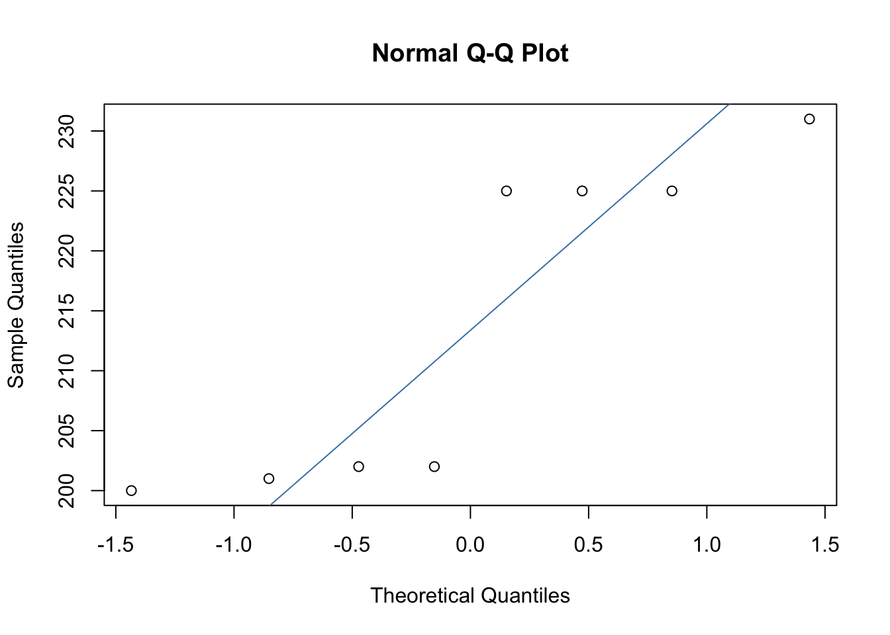
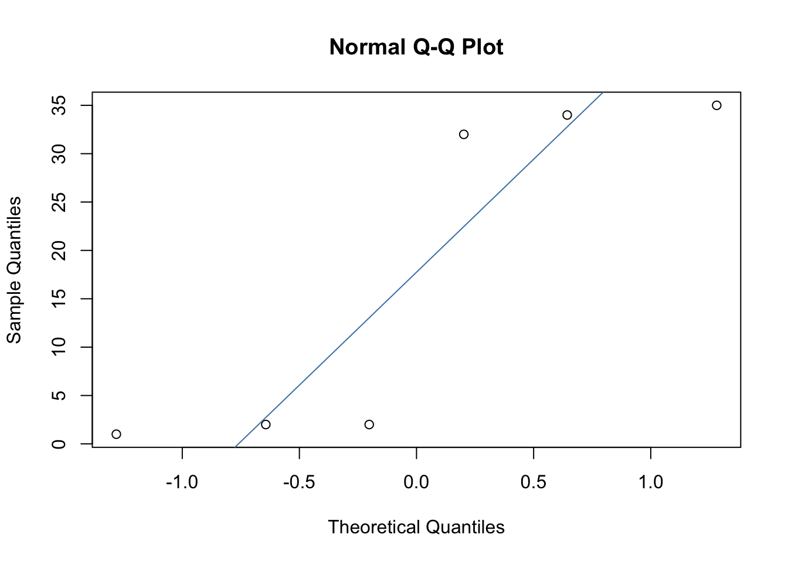

3 Lecture 6 (Non-parametric tests: Wilcoxon rank-sum and Wilcoxon signed-rank tests)
3.1 Lecture
This lecture comprises four parts:
Part 1: An introduction to non-parametric tests
Part 1 covers an introduction to non-parametric tests and when they might be useful to consider. The lecture recording is available here and the slides are available here.
Part 2: Testing the assumption of normality with two independent groups
Part 2 covers how to test the assumption of normality with two independent groups. The lecture recording is available here and the slides are available here.
Part 3: The Wilcoxon-rank sum test
Part 3 introduces you to the Wilcoxon rank-sum test. This includes when to use this test, the theory behind it, how the test statistic would be calculated manually, how to run the test in R, and how to interpret the output. The lecture recording is available here and the slides are available here.
Part 4: The Wilcoxon signed-rank test
Part 4 covers how to test the assumption of normality with two repeated measures and also introduces you to the Wilcoxon signed-rank test, including when to use the test, the theory behind it, how to calculate the test statistic manually, how to run the test in R and how to interpret the output. The lecture recording is available here and the slides are available here.
3.2 Pre-lab work
Before the lab, please watch the following video. This walks you through how to perform a Wilcoxon rank-sum test and Wilcoxon signed-rank test in R. The R markdown script covered in this video and the required data files can be downloaded here.
3.3 Lab
In the lab, we’ll practice running a Wilcoxon rank-sum and Wilcoxon signed-rank test in R. Please download the following zip file which contains two datasets: apple_study_data.csv and banana_study_data.csv.
The datasets relate to the following research questions:
1. Apple dataset
You are a researcher interested in whether the old saying “an apple a day keeps the doctor away is true”. You recruit 16 people and assign each participant to either a “0 apples” or “1 apple” condition. Participants in the “0 apple” condition eat 0 apples every day for a year. Participants in the “1 apple” condition eat 1 apple a day for a year. You ask participants to report how many times they visited the GP in the year.
2. Banana dataset
You are interested in whether eating bananas keeps the doctor away.
This time you recruit only one group of participants. In the first year, you ask them to eat 0 banana every day. In the second year, you ask them to eat 1 bananas a day. You ask them to report how many times they visit the GP in Year 1 and Year 2.
Consider each research question, perform the normality checks, and then the appropriate analyses.
3.3.1 Model script
Here is a model script that produces the answers to the above research questions. I use the word ‘model’ loosely, as you may have used different functions you’ve learned over the last two years (and that’s absolutely fine!). So don’t worry if you haven’t used the exact same functions as me. You should end up with the same results and interpretation at the end though.
3.3.2 Feedback on scripts
Feedback on R scripts submitted by students is available here.
3.4 Independent learning
This is optional, but recommended. The answers are found below.
3.4.1 Activity 1
Calculating test statistics manually
3.4.1.1 Wilcoxon rank-sum test
You are a researcher interested in whether the number of cups of coffee drank affects how many admin tasks participants can get done in an hour. You assign to one of two conditions (drink 4 cups of coffee a day or drink 0 cups of coffee a day). After a week, you ask participants to come into the lab and ask them to complete a range of admin tasks. You count how many admin tasks they manage to complete. The data are below.
Use this data to calculate the test statistic manually:
| Group | Tasks_completed |
|---|---|
| 4 cups | 5 |
| 4 cups | 18 |
| 4 cups | 14 |
| 0 cups | 6 |
| 0 cups | 4 |
| 0 cups | 17 |
| 0 cups | 14 |
Steps:
First rank the data
Sum the ranks for each group
Calculate the mean rank for each group
Calculate the sum of ranks minus mean rank for each group
What is the test statistic?
What might R report as the test statistic and why?
3.4.1.2 Wilcoxon signed-rank test
You are a researcher interested in whether a reading intervention helps children. You assess children’s reading skills and then give them all an intensive reading intervention. You then measure their reading abilities again.
Use this data to calculate the test statistic manually
| Before_intervention | After_intervention |
|---|---|
| 23 | 27 |
| 34 | 34 |
| 67 | 91 |
| 65 | 67 |
| 21 | 44 |
Calculate the difference between “Before intervention” and “After intervention”
Note whether the difference is positive or negative
Rank the difference
- Next, add up positive ranks and negative ranks
What is the test statistic (T)?
R reports a test statistic “V” instead of R. What might V equal to? Why might V equal to two values?
3.4.2 Activity 2
Interpreting R output
Interpret the following R output. Part 1 uses an independent groups design. Part 2 uses a repeated measures design. Please note, this data are different to that used in Activity 1 (so the test statistics will be different).
3.4.2.1 An independent groups design
3.4.2.1.1 Testing the assumption of normality

3.4.2.1.2 Interpret the descriptive statistics and the model output
## Warning in wilcox.test.default(x = DATA[[1L]], y = DATA[[2L]], ...): cannot compute exact p-value with ties##
## Wilcoxon rank sum test with continuity correction
##
## data: Outcome by Group
## W = 19, p-value = 0.9357
## alternative hypothesis: true location shift is not equal to 0## # A tibble: 2 × 5
## Group med min max `n()`
## <int> <dbl> <int> <int> <int>
## 1 1 17 1 35 6
## 2 2 5.5 2 9 6What can we conclude? Report in APA format.
How was the p-value calculated?
3.4.2.2 A repeated measures design
You are a researcher interested in whether the amount of chocolate eaten is different before and after the participant goes a diet.
3.4.2.2.1 Testing the assumption of normality

##
## Shapiro-Wilk normality test
##
## data: worksheet_activity2$Difference
## W = 0.76888, p-value = 0.01318Is the assumption violated?
3.4.2.2.2 Interpret the descriptive statistics and the model output
## Warning in wilcox.test.default(worksheet_activity2$Before, worksheet_activity2$After, : cannot compute exact p-value with
## ties##
## Wilcoxon signed rank test with continuity correction
##
## data: worksheet_activity2$Before and worksheet_activity2$After
## V = 36, p-value = 0.01368
## alternative hypothesis: true location shift is not equal to 0## median_before median_after min_before min_after max_before max_after n()
## 1 232 18 230 4 235 33 8What can we conclude? Report in APA format.
How was the p-value calculated?
3.4.3 Activity 1: Answers
3.4.3.1 Wilcoxon rank-sum test
Steps:
1. First rank the data
| Group | Tasks_completed | Rank |
|---|---|---|
| 4 cups | 5 | 2.0 |
| 4 cups | 18 | 7.0 |
| 4 cups | 14 | 4.5 |
| 0 cups | 6 | 3.0 |
| 0 cups | 4 | 1.0 |
| 0 cups | 17 | 6.0 |
| 0 cups | 14 | 4.5 |
2. Sum the ranks per group
4 cups = 13.5
0 cups = 14.5
3. Calculate the mean rank per group
4 cups = 3*4 = 12. 12/2 = 6
0 cups = 4*5 = 20. 20/2 = 10
4. Calculate the sum of ranks minus mean rank per group
4 cups = 13.5-6 = 7.5
0 cups = 14.5-10 = 4.5
5. What is the test statistic?
Test statistic = The lowest sum of ranks. Test statistic = 4.5
6. What might R report as the test statistic and why?
R reports the test statistic (W) as the sum of ranks minus the mean rank for the first factor level. R may therefore report the test statistic as 4.5 or 7.5.
3.4.3.2 Wilcoxon signed-rank test
1. Calculate the difference between “Before intervention” and “After intervention”
| Before_intervention | After_intervention | Difference |
|---|---|---|
| 23 | 27 | -4 |
| 34 | 34 | Exclude |
| 67 | 91 | -24 |
| 65 | 67 | -2 |
| 21 | 44 | -23 |
2. Note whether the difference is positive or negative
| Before_intervention | After_intervention | Difference | Sign |
|---|---|---|---|
| 23 | 27 | -4 | Negative |
| 34 | 34 | Exclude | |
| 67 | 91 | -24 | Negative |
| 65 | 67 | -2 | Negative |
| 21 | 44 | -23 | Negative |
3. Rank the difference
| Before_intervention | After_intervention | Difference | Sign | Rank |
|---|---|---|---|---|
| 23 | 27 | -4 | Negative | 2 |
| 34 | 34 | Exclude | ||
| 67 | 91 | -24 | Negative | 4 |
| 65 | 67 | -2 | Negative | 1 |
| 21 | 44 | -23 | Negative | 3 |
4. Next, add up positive ranks and negative ranks
Positive ranks: 0
Negative ranks: 10
5. What is the test statistic (T)?
T = 0
6. R reports a test statistic “V” instead of R. What might V equal to? Why might V equal to two values?
V = 0 or 10. V is equal to the sum of positive ranks. But whether ranks are positive or negative depends on whether you enter “before” or “after” first into the wilcox.test function (as this determines whether you calculate the difference by doing before-after or after-before).
3.4.4 Activity 2: Answers
3.4.4.2 Testing the assumption of normality
3.4.4.2.1 Group 1:

##
## Shapiro-Wilk normality test
##
## data: group1$Outcome
## W = 0.72773, p-value = 0.011963.4.4.2.2 Group 2:

##
## Shapiro-Wilk normality test
##
## data: group2$Outcome
## W = 0.95764, p-value = 0.8014Is the assumption violated?
Group 1: The assumption of normality is violated. Quite a few points deviate from the line in the Q-Q plot and the Shapiro-Wilk test is significant.
Group 2: The assumption of normality is not violated. The dots generally follow the line well in the Q-Q plot and the Shapiro-Wilk test is non-significant.
3.4.4.3 Interpret the descriptive statistics and the model output
## Warning in wilcox.test.default(x = DATA[[1L]], y = DATA[[2L]], ...): cannot compute exact p-value with ties##
## Wilcoxon rank sum test with continuity correction
##
## data: Outcome by Group
## W = 19, p-value = 0.9357
## alternative hypothesis: true location shift is not equal to 0## # A tibble: 2 × 5
## Group med min max `n()`
## <int> <dbl> <int> <int> <int>
## 1 1 17 1 35 6
## 2 2 5.5 2 9 6What can we conclude? Report in APA format.
The Wilcoxon rank-sum test revealed no significant difference between Group 1 (Median = 17, Range = 1-35) and Group 2 (Median = 5.5, Range = 2-9; W = 19, p = 0.936).
Note: In practice, you should also calculate the effect size and report that.
How was the p-value calculated?
The normal approximation with the continuity correction
3.4.4.5 Testing the assumption of normality
##
## Shapiro-Wilk normality test
##
## data: worksheet_activity2$Difference
## W = 0.76888, p-value = 0.01318Is the assumption violated?
The assumption of normality is violated. Some points deviate quite a bit from the line in the Q-Q plot and the Shapiro-Wilk test is significant.
3.4.4.6 Interpret the descriptive statistics and the model output
##
## Wilcoxon signed rank test with continuity correction
##
## data: worksheet_activity2$Before and worksheet_activity2$After
## V = 36, p-value = 0.01368
## alternative hypothesis: true location shift is not equal to 0## median_before median_after min_before min_after max_before max_after n()
## 1 232 18 230 4 235 33 8What can we conclude? Report in APA format.
The Wilcoxon signed-rank test revealed that participants ate significantly more grams of chocolate before the diet (Median = 232, Range = 230-235) than after the diet (Median = 18; Range = 4-33), V = 36, p = 0.014.
Note: In practice, you should also calculate the effect size and report that.
How was the p-value calculated?
The normal approximation with the continuity correction